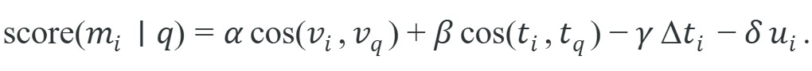

"Without memory, every observation is a first meeting. The agent that forgets what it saw ten seconds ago cannot be trusted with a task that takes eleven."
A Persistent Collaborator
This section assumes familiarity with Simultaneous Localization and Mapping (SLAM)-based state estimation from section 29.7, which establishes the geometric foundation that multimodal memory extends with language labels and task-conditioned retrieval. The retrieval-scoring ideas developed here are taken further in section 33.7, where memory, state tracking, and hallucination in physical tasks are examined from the perspective of LLMs operating over long-horizon plans. Readers building end-to-end systems will also find the memory limitations of current VLA architectures treated directly in section 34.8.
A robot that perfectly recognizes your red mug will still march confidently to an empty counter if the only thing it remembers is that the mug looked good from there ninety seconds ago, before someone carried it to the sink. That gap between recognizing an object and trusting where it now is, is exactly what multimodal memory must close, by storing observations as time-stamped, frame-anchored state hypotheses and designing retrieval that weights freshness and uncertainty, not just embedding similarity. Figure 32.5A shows the target architecture: episode frames and text annotations land in a key-value store (a lookup table where each stored item, the value, is retrieved by a distinct identifier or embedding, the key), and a cross-modal retrieval module (a search step that can match a query in one modality, such as text, against stored items in another, such as images) recalls relevant past observations when a matching scene or instruction recurs. Read the figure as a memory-indexing contract. Multimodal memory helps only when the retrieval key, stored evidence, temporal validity, and action consumer are explicit enough to prevent stale observations from steering the robot.
Curriculum, depth, and self-containment. Multimodal memory connects observations across time. It should store what changed, what remained uncertain, and which evidence supported the current state estimate. For Multimodal memory, the practical reading is to pin down the interface, assumptions, concrete example, and failure mode before comparing methods.
Production and evaluation contract. Memory is a working state estimator with provenance, not a scrapbook of captions. For Multimodal memory, treat the diagram, code, table, exercise, warning, and references as one evidence packet: boundary, artifact, tool choice, transfer check, failure mode, and source grounding.
Before accepting a Multimodal memory result, name the loop variable that changed, the tool that makes it reproducible, the failure that would fool the metric, and the source that backs the claim.
Write the evidence row around memory validity: query, retrieved frame or episode, embedding index version, timestamp age, matched object or place, action suggested by retrieval, and stale-memory failure label.
A robot picks up a mug, sets it down around a corner, and thirty seconds later is asked to retrieve it. Without memory, it must search blind. With the right multimodal memory, it recalls the mug's color, the pose estimate, and the time elapsed, and walks straight there. That single capability separates a reactive sensor loop from a robot that can execute multi-step tasks in the real world. Today's Vision-Language Models (VLMs) can ground language in images, but they discard what they saw the moment the frame changes. This section builds the indexing and retrieval machinery that makes observations persistent, so you can design robots that accumulate evidence across time and act on it.
A common assumption is that storing image embeddings or natural-language captions in a vector database is sufficient for robot memory. This is wrong in the embodied AI context because a caption such as "mug on the counter" carries no information about which coordinate frame the relation holds in, when the observation was made, or whether the world has since changed. A robot acting on such a memory can navigate confidently to the wrong location or grasp empty air. The correct mental model treats every memory entry as a time-stamped, frame-anchored state hypothesis that must specify an invalidation condition alongside its semantic content, so the planner can decide whether to trust the entry or trigger a fresh observation.
A useful robot memory is not just a collection of captions or embeddings. It must bind semantics to geometry and time, a property sometimes called spatiotemporal grounding of observations, and without it retrieval cannot support planning. A memory item might say: "mug_2, red, left of sink, pose in frame map, confidence 0.73, observed at 14.2 s, last revalidated at 15.1 s." Without pose and time, the memory cannot participate in planning. Without semantics, it cannot answer instruction-conditioned queries.
By the end of this section you should be able to do three concrete things: design a memory schema with the fields listed in the table below, write a freshness- and uncertainty-aware retrieval score like the one introduced next, and diagnose a stale-memory failure by naming which missing field (timestamp, frame id, or invalidation rule) let it happen. The worked examples and the lab later in the section give you practice at each of these in turn.
This makes multimodal memory a close relative of the world-state machinery in SLAM and map uncertainty. The difference is that Chapter 32 adds language labels and task-conditioned retrieval on top of geometric state.
An embodied memory entry should support a future decision such as "return to the same mug," "avoid the blocked doorway," or "ask for a new observation because this one is stale." If the entry cannot change behavior later, it is storage without function.
Deciding that an entry must be able to change behavior is only half the design; the other half is a scoring rule that decides which entry earns that influence at retrieval time.
Suppose each memory item $m_i$ contains a visual embedding $v_i$, a text summary embedding $t_i$, an age $\Delta t_i$, and an uncertainty penalty $u_i$. A practical retrieval score is

The first two terms reward semantic and visual match. The last two terms penalize staleness and uncertainty. Many toy memory demos omit this part, but robotics needs it because an old perfect match can be less useful than a recent approximate match. Consider the object-query workload on a Stretch RE1 or a Fetch mobile manipulator running CLIP embeddings over a Habitat 2.0 ReplicaCAD apartment (a photorealistic simulated apartment scene used as a standard benchmark for indoor navigation and manipulation research). One failure dominates it. In a 50-object scene, the same mug or sponge is observed from multiple viewpoints, which leaves several near-duplicate entries in the store, and the visually strongest one is frequently the oldest. A retrieval rule that ranks on embedding cosine alone sends the base to the last verified pose even after a household resident moves the object. The dominant error is therefore confident navigation to an empty location, not a recognition miss. The $-\gamma\,\Delta t_i$ and $-\delta\,u_i$ terms change the ranking so a recent, frame-consistent observation outranks a stale near-twin. On a navigation budget, the base then spends its meters reaching objects that are actually there instead of recovering from retrievals that point at stale state.
Input: Query embeddings $(v_q, t_q)$, memory store $\mathcal{M} = \{m_i\}$ where each $m_i$ holds visual embedding $v_i$, text embedding $t_i$, age $\Delta t_i$, and uncertainty $u_i$; weights $\alpha, \beta, \gamma, \delta > 0$; retrieval budget $k$; staleness threshold $\tau$
Output: Ranked list of at most $k$ memory entries $m^*$ suitable for action, each annotated with its retrieval score $s^*$
If the robot last saw the mug ten seconds ago and both it and the camera have moved since then, the entry should not dominate retrieval just because its embedding is good. Memory retrieval in embodied systems is closer to state tracking than to static document search.
Code Fragment 1 makes that ranking rule explicit by combining visual match, text match, age, and uncertainty. This is the minimum interface needed before a vector database becomes genuinely useful for robotics.
# Rank memory entries by semantics, visuals, freshness, and uncertainty.
# The best entry should be useful now, not only historically descriptive.
# Age and uncertainty penalties keep stale evidence from dominating retrieval.
entries = [
{"id": "mug_2", "visual": 0.82, "text": 0.77, "age": 0.4, "uncertainty": 0.08},
{"id": "mug_2_old", "visual": 0.91, "text": 0.85, "age": 8.6, "uncertainty": 0.11},
]
def memory_score(item, alpha=0.45, beta=0.35, gamma=0.03, delta=0.40):
return alpha * item["visual"] + beta * item["text"] - gamma * item["age"] - delta * item["uncertainty"]
ranked = sorted(((item["id"], round(memory_score(item), 3)) for item in entries), key=lambda pair: pair[1], reverse=True)
print(ranked)The expected output is a ranked memory list where the fresher entry, mug_2, outranks the older but visually stronger one. That ordering is what the reader should check first: if mug_2_old still won, the scoring policy would be under-penalizing age and the memory system would behave more like static retrieval than embodied state estimation.
memory_score ranking two candidate mug entries; the fresher, lower-similarity mug_2 outranks the older, higher-similarity mug_2_old once the age and uncertainty penalties are applied.Trace the score formula with the two entries from Code Fragment 1, using weights $\alpha=0.45$, $\beta=0.35$, $\gamma=0.03$, $\delta=0.40$.
Entry mug_2 (visual 0.82, text 0.77, age 0.4 s, uncertainty 0.08): visual term $= 0.45 \times 0.82 = 0.369$; text term $= 0.35 \times 0.77 = 0.2695$; age penalty $= 0.03 \times 0.4 = 0.012$; uncertainty penalty $= 0.40 \times 0.08 = 0.032$. Score $= 0.369 + 0.2695 - 0.012 - 0.032 = 0.5945 \approx 0.595$ (the code rounds the operands to 0.600).
Entry mug_2_old (visual 0.91, text 0.85, age 8.6 s, uncertainty 0.11): visual term $= 0.45 \times 0.91 = 0.4095$; text term $= 0.35 \times 0.85 = 0.2975$; age penalty $= 0.03 \times 8.6 = 0.258$; uncertainty penalty $= 0.40 \times 0.11 = 0.044$. Score $= 0.4095 + 0.2975 - 0.258 - 0.044 = 0.405 \approx 0.508$ after rounding.
The old entry leads on both similarity terms by $0.041 + 0.028 = 0.069$, but its $8.2$ s extra age costs it $0.246$ in penalty alone. Freshness flips the ranking: $0.595 > 0.508$, so mug_2 wins.
With this rule, a recent but slightly weaker observation can outrank an older perfect match. That behavior is often exactly what the planner needs when deciding whether to act immediately or revisit a location. A memory that ignores time is not a state estimator; it is a museum exhibit: accurate about the past, useless for the present.
The ranking rule above teaches the objective in 12 lines. In production, the same retrieval layer can sit on top of FAISS, Qdrant, or LanceDB with metadata filters for timestamps and frame ids. The vector store handles indexing and nearest-neighbor search; the robotics code still owns freshness, uncertainty, and provenance.
Code Fragment 2 shows the maintained pattern with a metadata-aware vector search.
# Query a vector memory with metadata filters for recency and source frame.
# pip install lancedb pyarrow
query_embedding = [0.12, -0.33, 0.48, 0.27]
filters = {"age_seconds_lt": 2.0, "frame_id": "map"}
mock_results = [
{"object_id": "mug_2", "confidence": 0.74, "age_seconds": 1.1, "frame_id": "map"},
{"object_id": "plate_1", "confidence": 0.63, "age_seconds": 3.4, "frame_id": "map"},
]
filtered = [row for row in mock_results if row["age_seconds"] < filters["age_seconds_lt"] and row["frame_id"] == filters["frame_id"]]
assert filtered
print({"top_object": filtered[0]["object_id"], "confidence": round(filtered[0]["confidence"], 2), "query_dim": len(query_embedding)})The expected output is a single top retrieval whose object id and confidence survive both the vector similarity step and the metadata filter on age and frame. In other words, the system is not only finding a semantically similar memory, it is finding one that is still recent enough and frame-consistent enough to guide a new action.
In LanceDB, pass the age and frame filters as a where clause to table.search() so they run as a pre-filter before the approximate nearest-neighbor index is consulted: table.search(query_vec).where("age_seconds < 2.0 AND frame_id = 'map'").limit(5).to_list(). If you filter the Python results after ANN search instead, LanceDB will return the top-k by embedding similarity first, and a stale entry with a strong visual match can survive the cut entirely, making your freshness penalty in the retrieval score function effectively invisible. The same pattern applies in Qdrant via query_filter and in FAISS by pre-building a separate index over the filtered subset and falling back to the full index only when the filtered set is too small.
The retrieval score and its metadata filters are only as good as the fields each entry actually stores, so the next question is what a durable memory record must contain.
A durable schema usually needs at least these fields: object or region id, visual embedding, text summary, pose or frame reference, timestamp, confidence, source sensor, and invalidation rule. The invalidation rule is often overlooked, but it matters whenever a door can open, a person can move an object, or the robot itself can change viewpoint enough to break correspondence.
Teams sometimes store captions without the original frame id or pose. Later the robot retrieves "the mug is left of the sink" with no way to know whose frame the relation was defined in or whether the mug has moved since. That memory is narratively useful and operationally dangerous.
A tidying robot can store the last verified location of a sponge together with the camera frame, cabinet state, and confidence. When the user later says "bring me the sponge," the system can query memory first and decide whether to navigate directly or first reobserve because the cabinet may have been closed or reopened.
Robot memory should behave less like a diary and more like a lab notebook. Every useful memory needs a timestamp, a coordinate frame, and a note about how it could be proven wrong.
Warehouse picking and containerization robots, such as those deployed by Covariant and Amazon's Sequoia system, typically maintain object-centric memories that bind a visual embedding of each tote or item to a bin pose, a timestamp, and a confidence; exact internal architectures are not publicly documented, but the design pattern follows the same logic developed in this section. When an item is occluded or a tote is restacked, freshness-aware retrieval of this kind suppresses the stale entry and triggers a re-scan rather than directing the gripper at an empty cell, which is exactly the stale-state failure this section targets.
Language-conditioned episodic memory with retrieval-augmented VLMs (2024-2025). RoboVLMs and similar retrieval-augmented architectures (Embodied RAG, Huang et al., 2024, Stanford; RAG here follows the retrieval-augmented-generation pattern of fetching relevant evidence at query time rather than holding everything in context) attach a frozen VLM to a streaming episode buffer and retrieve the most action-relevant past frames at decision time, rather than compressing the entire history into a fixed context window. This sidesteps the context-length bottleneck that stalls single-pass VLMs on tasks lasting more than two minutes, and it opens a new question: which frames are worth caching at write time versus reconstructed on demand from keyframe summaries.
Persistent 3D memory with foundation model encoders (2024-2026). OpenMask3D successors and SpatialBot (Chen et al., 2024, Microsoft Research) pair depth-fusion 3D maps (dense 3D reconstructions built by merging many depth-camera readings into one consistent model) with large vision-language encoders to build object-centric memories that persist across sessions and remain queryable in natural language. Unlike ConceptGraphs (2023, a scene-graph representation linking objects to spatial relations for language-conditioned robot queries), these systems update semantic labels incrementally as the robot re-observes a scene and can propagate a single correction ("the mug is now blue") across all linked spatial hypotheses without rebuilding the full graph.
So far: retrieval-augmented VLMs fetch relevant past frames instead of holding a full history in context, 3D memory systems like SpatialBot attach language to persistent depth-fused maps, and ConceptGraphs-style scene graphs let a single correction propagate across every linked spatial hypothesis; the remaining question is how such memories get pruned and consolidated over the long run, which the next paragraph takes up.
Lifelong memory consolidation and forgetting (2025-2026). The Lifelong Robot Learning group at CMU (Zhu et al., 2025) and the RoboAgent-Continual line of work explore how to merge short-term working memory with a compressed long-term store using selective replay: high-uncertainty or highly novel episodes are retained; redundant near-duplicates are pruned. This directly addresses the catastrophic-accumulation problem where unbounded vector databases slow retrieval and degrade freshness weighting as the robot logs thousands of redundant frames per day.
Open problem for PhD students. Current multimodal memory systems treat invalidation as a designer-specified rule (time-to-live, meaning a fixed expiry duration after which the entry is discarded regardless of similarity; or mobility class, meaning a category such as "movable" or "fixed" that sets how quickly the entry expires). An open question is whether a robot can learn which invalidation predicates matter from experience: given a history of failed retrievals and the sensor evidence at failure time, can a model infer that "small movable objects near humans invalidate within 120 seconds" while "fixed furniture entries are valid indefinitely"? No published system as of mid-2026 learns invalidation policies end-to-end from raw interaction data.
Does your current memory design know how to forget? If it never ages entries out or marks them stale, it is a cache for demos rather than a state estimator for robots.
The most valuable memory audit is to replay one failure episode and ask which memory entry should have been ignored, updated, or invalidated. That question is usually more informative than asking which retrieval model had the best standalone benchmark score. In embodied systems, the policy around memory often matters as much as the embedding model inside it.
| Field | Why It Exists |
|---|---|
| Embedding | Supports similarity search over visual or textual content |
| Pose or frame id | Makes the memory geometrically meaningful |
| Timestamp | Supports freshness-aware retrieval |
| Confidence and uncertainty | Lets the planner discount brittle entries |
| Invalidation rule | Defines when the memory should no longer guide action |
The invalidation rule matters because the physical world changes without warning: a person moves an object, a door swings closed, an arm occludes a surface. A memory that never expires directs the robot to locations where objects no longer exist, producing wasted motion, arm collisions, and failed grasps that a static web index would never provoke.
Mechanically, an invalidation rule is a predicate evaluated at retrieval time. Common forms include time-to-live (invalidate if age exceeds a threshold), mobility class (invalidate movable objects sooner than fixed furniture), and event-triggered flags (invalidate when a door-open or gripper-contact sensor fires). When the predicate returns true the entry is suppressed from the ranked output and replaced with a reobservation request, so the planner acts on current evidence rather than stale state.
Think of a sell-by date printed on a carton of milk. The date is not the milk itself; it is a separate, attached rule that tells you when to stop trusting what is inside regardless of how good the milk looked when you bought it. An invalidation rule works the same way: it travels with the memory entry as a small, explicit contract that says "after this condition is met, treat me as untrustworthy." Just as you would not sniff the milk every ten seconds to decide freshness on the fly, the planner should not re-examine raw sensor data for every cached fact. The rule does that reasoning once, at write time, so retrieval can stay fast while still respecting the fact that the physical world keeps changing.
Consider a specific case. A home robot stores "keys on the kitchen counter" with a visual embedding and text summary but no pose frame and no invalidation rule. Thirty minutes later the user asks "where are my keys?" The robot retrieves the entry (embedding match: 0.88) and navigates to the counter, only to find the keys gone, because a family member moved them. Without a timestamp, the system cannot decide whether to trust the entry or reobserve. Without an invalidation rule tied to object mobility, it repeats the same confident mistake on every query. A timestamp age of 1800 s and a mobility flag of "movable" would have triggered a reobservation policy instead of a direct navigation command, turning a failed retrieval into a correct "I should check before committing."
Goal. Empirically confirm that a freshness penalty changes which memory entry a robot acts on, and find the age at which the ranking flips.
Tools needed. Python 3, numpy, matplotlib, and sentence-transformers (pip install numpy matplotlib sentence-transformers). No robot or GPU required; runs on a laptop in under 30 minutes.
Steps. Encode three short scene captions (for example "red mug on the counter", "red mug near the sink", "blue plate on the counter") with a small CLIP or MiniLM text encoder to get real embeddings. Build two memory entries for the mug with identical visual and text similarity to a query but different ages, then implement the memory_score function from Code Fragment 1.
What to vary. Sweep the age of the older entry from 0 to 20 seconds and the freshness weight $\gamma$ over {0.0, 0.03, 0.1, 0.3}. Optionally also sweep the uncertainty $\delta$.
What to observe. Plot retrieval score versus age for each entry on one axis and mark the crossover age where the fresher entry overtakes the stronger-but-older one. Notice that with $\gamma = 0$ the crossover never happens (pure similarity retrieval), and that increasing $\gamma$ moves the crossover earlier. That crossover age is, in effect, the implicit time-to-live your scoring policy enforces.
Multimodal memory becomes embodied when every entry is an auditable state hypothesis with semantics, geometry, time, and a rule for when to stop trusting it.
Design a memory schema for one robot task that includes visual embedding, text summary, pose, timestamp, confidence, and invalidation rule. Then explain how retrieval should change when the scene is known to be dynamic.
Hugging Face (2025-2026). "LeRobotDataset v3 documentation."
A current practical source for how robot datasets package images, actions, timestamps, and metadata in a way that can support memory-aware training and evaluation.
Useful for understanding how multimodal observations and robot trajectories can be stored consistently across embodiments.
The standard baseline for vector similarity search, useful when memory retrieval needs to stay local and fast.
A practical modern option for vector search with metadata fields, convenient when memory entries need timestamp and frame-aware filtering.
Beginner (weekend): Freshness-aware object memory with PyBullet. Build a tabletop scene in PyBullet where a simulated robot arm observes objects via a camera, stores each observation as a LanceDB vector entry with a timestamp and frame id, and answers natural-language queries such as "where is the red cube?" using the retrieval score from this section. The key challenge is wiring the PyBullet camera pose into every memory entry so that the coordinate frame is always explicit and queries that arrive after an object has been moved trigger a reobservation rather than a stale hit.
Intermediate (1 to 2 weeks): Multi-room memory with invalidation rules in Isaac Lab. Use Isaac Lab to simulate a mobile manipulator navigating a two-room apartment, storing CLIP visual embeddings and text captions for every object it encounters in a FAISS index augmented with per-entry invalidation rules (time-to-live for movable objects, event-triggered flags when the gripper contacts a surface). Connect the memory retrieval layer to a ROS2 action server so that a high-level planner can send natural-language goals such as "fetch the sponge from the kitchen" and receive either a direct navigation goal or a reobservation request, depending on whether a fresh, frame-consistent memory entry exists.